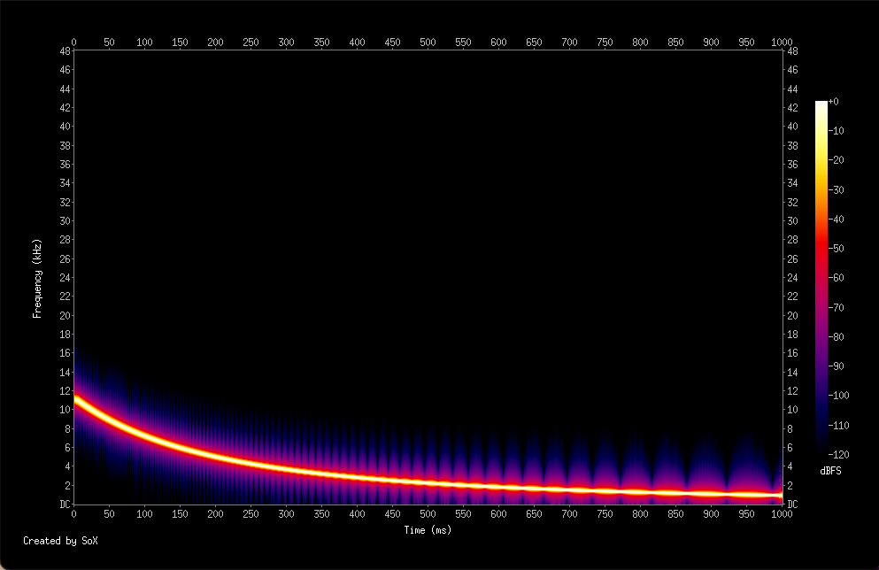
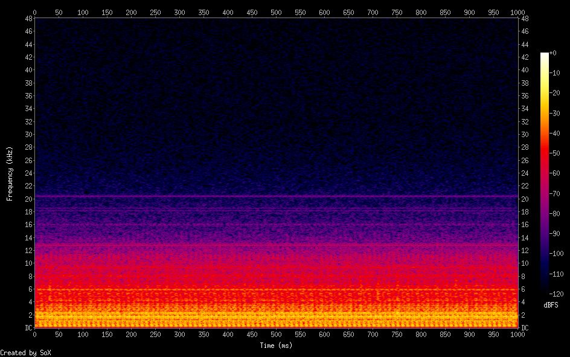
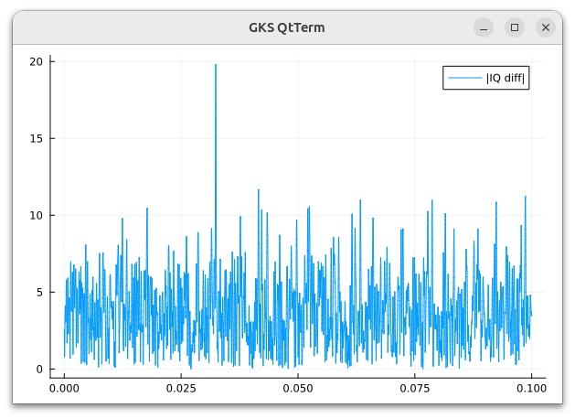

同期検波
受信した信号から特定の周波数成分を取り出すのに使われるのが同期検波です
信号を時間 t の関数 s(t) で表すときに特定の周波数 f の成分の大きさが A cos(2πf t) + B cos(2πf t) だとするとこれと cos(2πf t) および sin(2πf t) と掛けて、それを時刻 0, N の間で積算つまり積分して A や B を知ろうというアイデアに基づいています
例えば
A cos(2πf t) cos(2πf t) = A (cos(4πf t) +1)/2
なので実際には cos, sin を乗じた後にローパスフィルタを通して A や B を得るようにします
同じように時間変化する信号にテスト信号をかけて積分して調べることができます
数学的には畳み込み convolution という名前がついていますが、２つの信号の相関を調べる時の基本的な操作の一つです
ノイズに埋もれた信号は検出できるか
ノイズ観察のスペクトルには見えていませんでしたが夜間 20-25kHz 辺りには各国の VLF 放送の信号が並んでいます
これらの多くは潜水艦への送信です
海中ではこれらの信号はバックグラウンドのノイズよりはるかにレベルが低いので一見受信はムリそうに思えます
これらの信号のビットレートは大変低く例えば3秒に1bitぐらいと言われています
バックグラウンドのノイズはランダムなので3秒積分してもほぼ0になる一方でVLF信号の方は積み上がるので信号を検出できるというしかけです
携帯電話などでお世話になっているスペクトラム拡散方式の通信の原理も少し似ています
バックグラウンドのノイズには拡散した多くの周波数成分での相関がないのでコード等で相関を持たせた携帯電話のスペクトラム拡散方式の信号からコードが再生できるといった仕組みになっています
どれもノイズの多くは振幅か周波数成分に相関がないことを利用したうまい方法ですね
whistler 波は可聴周波数の電磁波で周波数が2-3秒の間に降下していく不思議な電磁波です
19世紀に長距離電話で笛を吹くような音が聞こえるという話あたりから知られはじめたようですがその発生や伝達のしくみが解明されるまでには長い時間が必要だったようです
オーロラ同様、地磁気緯度の高い地方の方が受信に有利でまた周波数が低いために都市ノイズが大きな障害になります
受信環境としてはすべての電力線から10km離れていることが望ましいとまで言われているので受信は大変難しそうです
whistler 波を模擬し c を定数として cos(c/t) 0 < a < t < b というテスト関数を考えてみます
位相 ϕ が c/t なので時刻 t1 での瞬間周波数は 1/(2π) \cdot d/dt(c/t) = -c/(2π t^2) になります
例えば c = 1800, a = 0.4, b = 1.4 とすると瞬間周波数が1秒間で 11.25kHz -> 0.9kHz と降下する信号が得られます

この信号を0.003倍して実際のELF受信データのある部分に加えて人工的なデータを作りました

このデータを信号とし、cos(c/t), sin(c/t) とで時間をずらしながら同期検波して結果をIとQという配列に入れました
IQの隣り合うデータ同士の距離をプロットすると

となってこの場合はどうにか検出に成功しているようです